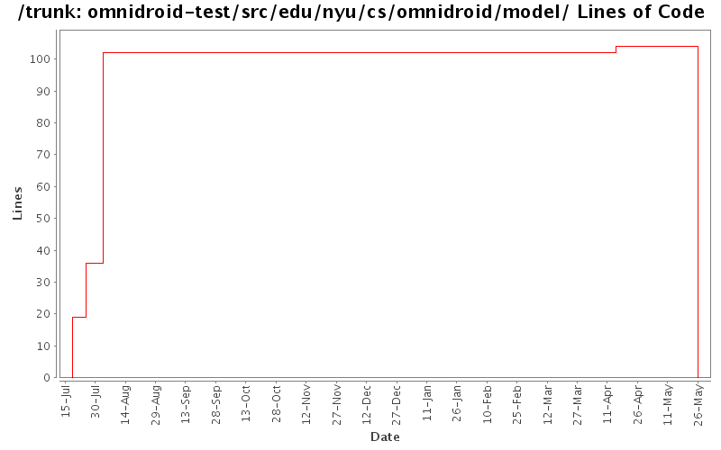

[root]/omnidroid-test/src/edu/nyu/cs/omnidroid/model
 db
(0 files, 0 lines)
db
(0 files, 0 lines)

| Author | Changes | Lines of Code | Lines per Change |
|---|---|---|---|
| Totals | 8 (100.0%) | 129 (100.0%) | 16.1 |
| londinop | 1 (12.5%) | 66 (51.2%) | 66.0 |
| ehotou | 3 (37.5%) | 55 (42.6%) | 18.3 |
| beanxlj | 1 (12.5%) | 8 (6.2%) | 8.0 |
| case.andrew | 3 (37.5%) | 0 (0.0%) | 0.0 |
Removing old unused directories.
0 lines of code changed in 3 files:
changed some tests
8 lines of code changed in 1 file:
Working Omnidroid core and tests
66 lines of code changed in 1 file:
Extend DataFilter table, also fix one bug in RuleActionDbAdapter
36 lines of code changed in 1 file:
Check in some general DB utils.
19 lines of code changed in 2 files: